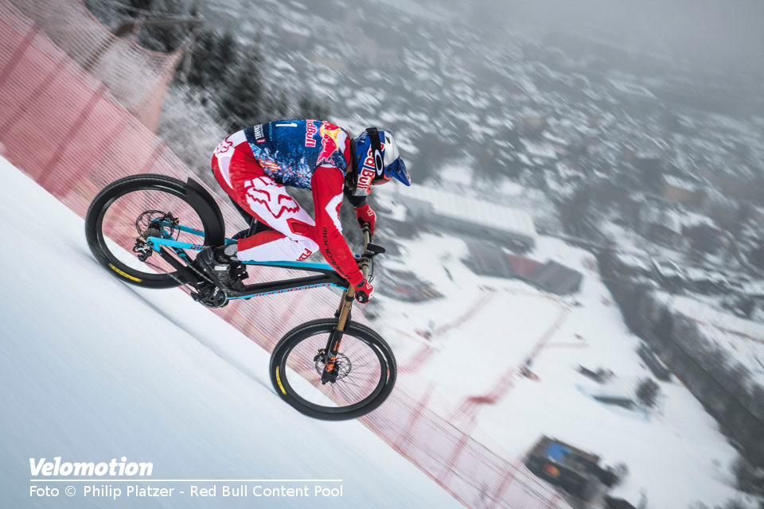

01
Zašto se to događa?
Kada je cesta gotovo ravna, biciklist lako održava kontrolu nad brzinom i ne mora često kočiti. Čim cesta postane strmija, brzina bicikla naglo raste, iako je riječ o istom biciklu i istoj osobi koja vozi. Promjena brzine je puno izraženija na strmijem dijelu ceste nego na ravnom.
Sličan učinak može se uočiti i kod skijaša na stazi, kolica na kosoj rampi ili lopte koja se otkotrlja niz nagnuti krov. Što je nagib strmiji, brzina tijela raste brže.

Zašto je to tako? Što uzrokuje ubrzavanje tijela niz kosinu i zašto veći nagib znači veće ubrzanje? Odgovor se nalazi u sili i njezinom djelovanju na gibanje tijela.
To ćemo provjeriti jednostavnim pokusom s kuglicom i nakošenim stolićem, koji predstavlja manji model kosine kakva postoji na cesti ili stazi.